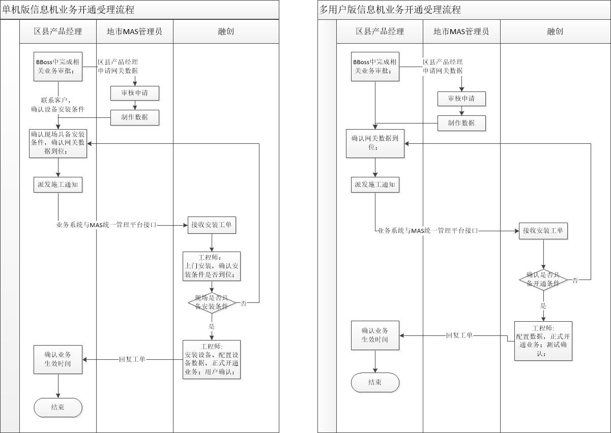

业务申请中的常见问题
OpenMas1.2/1.3/2.0 基础环境
OpenMas服务器一般出厂默认Ghost系统已部署好基础环境，特殊客户需要使用自己的服务器，则需要工程师安装如下基础环境：
1.安装操作系统：Windows server2008 X64 并激活
2.安装数据库（企业版）：Microsoft SQL Server 2008 Enterprise X64
3.安装应用环境：.net framework 3.5 SP1 和 IIS 7
4.安装Office 组件：AccessDatabaseEngine_X64.exe 或 AccessDatabaseEngine_X86.exe
5.安装杀毒软件（按需选择）：360安全卫士、360杀毒
6.系统防火墙设置（端口设置）：8000-9000、7070、9080、9090、5700、6111等
7.修改默认远程端口，不能是3389默认端口，注意加入防火墙例外
8.设置操作系统administrator用户的密码
OpenMas1.2/1.3/2.0 出入栈端口
OpenMAS服务器一般安装IDC机房，在机房工程师的配合下，在机房防火墙中开放以下端口和访问策略，并保证远程桌面正常：
1.Web访问：允许客户端访问OpenMAS服务器的IP及8000-9000端口；
2.二次开发的：允许OpenMAS访问客户侧平台的相关IP及端口，应允许客户侧平台访问OpenMAS的IP及9080、9090或数据库1433端口（多用户版是自定义的）；
3.短信发送：允许OpenMAS访问外网短信网关地址211.140.12.43、44、45的7890端口；
如果是通过内网专线访问短信网关，则需允许访问10.70.108.1或2或10
4.彩信发送：允许OpenMAS访问外网彩信网关地址211.140.27.30的5700端口；
如果是通过内网专线访问彩信网关，则需允许访问10.70.108.12或2或10
5.接收上行彩信和彩信状态报告：允许外网211.140.27.30访问OpenMAS的5700-5800端口；
6.远程桌面：允许外网或指定外网访问OpenMas服务器远程桌面端口（需符合安全规范定义远程桌面端口，不得使用默认端口3389）；
7.访问统一支撑门户（域名服务器）：www.openmas.net 端口80
OpenMas信息机安装流程图
